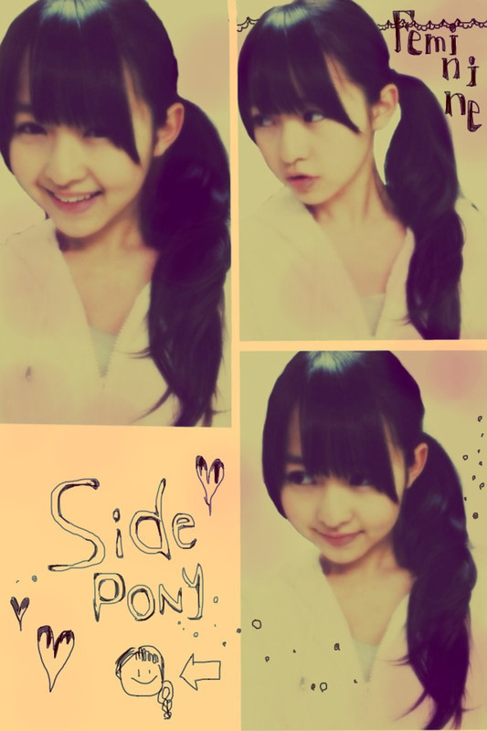

| 2012/01 21 Sat | 56回目*marika |
いつも読んでくださってる方、
初めて読んでくださった方、
コメントしてくださった方、
ありがとうございます!!
まりかです。
みなさん、あたたかいコメント、
乃木坂のファミリーであるみなさんの
気持ちを書いてくださって
ありがとうございました。
乃木坂46全員での舞台、
みなさんの前で、特別な
最高の舞台を披露したいです。
私が舞台で歌って踊って
キラキラした笑顔を
乃木坂ファミリーに届けたいです!!
それが私の初舞台です。
いつもあたたかく見守ってくださる
みなさんがだいすきです。
今日は話したいこと沢山あるから
めっっっっちゃ長いBloGになりますが
最後までつきあってね^^♡
......................
・お肌とぅるとぅるだけど
なんか特別なことしてるの〜っ？
*****
とっとぅるとぅる♡!?
わ〜うれしい♪
特別なことは特に何もしていません。
化粧水、乳液...くらいです。
でもお仕事の前日はパック!!!!!笑
・握手会の時に、ハーフアップツインにしてくれますか？
*****
そうだな。
ダウンばっかりだから、もしできたらします☆
・きゃりーぱみゅぱみゅさんとか、好き？
*****
かーわいーですよね♡
服装も奇抜で派手派手でアート作品だ!!
と思うくらい素敵だし、尊敬します＊!!
・握手会で｢いつもコメントしている♪
まめちょこω♪です｣って言ったらわかりますか？ww
*****
わかります:3♪にひっ
・べびたんの最近のマイブームは？
*****
落書きとかかしら^^むふ
おひげさんとか猫耳とか...!!
・マスクしながら寝て息苦しくないん？笑っ
*****
慣れたかな☆!!
朝起きたらマスク消えてるけど笑←
風邪が治りそうだなって思うから
今はつけて寝ます:-D
・今までは、『テンション高山』でしたが、
これからは『テンション高マリカ』にしますね(笑)
*****
やーうれしい!!
高まりか高まりか〜:Dきらきら
・具体的に行きたい学科とかあるのかな？
べびたんは理系、文系、まだ決めてない？
*****
一応は決めてます^^*
これからどうなるかはわからないから...
でも、理系、文系かっていったら
絶対文系です!!
理科も数学もできないっ←
・やっぱりべびたんのデコり尊敬！
師匠と呼んでいいですか？(笑)
*****
ありがとうございます!!
師匠!??
しっ、師匠....
堅いからいつも通り呼んでっ♡笑
・この画像のアプリなんてゆーのー((((；ﾟДﾟ)))))))❤？
・写真のアプリって何か教えてほしいです(>_<)♪
*****
あの写真は『PIxlromatic』です＊
「一眼カメラ」
とかも良いですよ=3
・確か以前貧血ぎみだって
言ってたけどその後どうですか？
*****
心配してくださってたのに感動><
ありがとうございます。
最近は貧血になっていないので
大丈夫ですっ☆元気もりもり
鉄分鉄分っ☆
・色んな占いって信じるほう？
*****
そうですね...
星占い信じちゃう笑
・Ｗ伊藤で歌うとどうなるの？？
ハモれるの？どっちが高音？
*****
私の方が高いかな??
学校での合唱のパートもずっとソプラノだったから..
んじゃ、伊藤ちゃんずで合唱するしかっ笑
・まりかちゃんのファッション好みです。
よく行くショップはどこですか？
*****
本当ですか!♡
うれしい!!!!
よく行くのは...ラフォーレ。
ParAvionとかRNA-N-とか
好きなブランド沢山入ってるから♡
あとは古着屋よく行きます:3
・私服も、デニム姿が珍しく感じるー！
デニムも結構はくの??(^ω^)
*****
珍しいですか?
けっこう履きますよ!!
スキニー以外にもボーイフレンドデニムは
楽だからよく履きます＊
・伊藤ちゃんずの写真は、
ベビたんの目が何だかいつもと感じが違うのはナゼ？？？
わからないけど....
メイクルームの照明でかな><
カラコンは入れてないですよ〜
・プリザーブドライフラワーって知ってる？？？
*****
知ってます!!
きれいですよね♡
普通のお花もすきだけど
私はドライフラワーもすきです*
色がちょと渋くなってかわいいっ。
・僕はべびたんと同じ高1なんですけど、
なかなか勉強する気が出ません。
そんな時はどうすればいいの？
教えて～(；´Д`A
*****
私がテスト勉強する時は
自分の部屋じゃなくてリビングでやっています!!
自分の部屋だとすきなものが
手に届く所にあるからつい手を出しちゃう><
あと、勉強する気が起きないときに
なんとなくでいいから
椅子に座って同じ単語とか文章を何回か書いていると
自然と覚えて次も書こう!!ていう気になりますよ!!
一緒に頑張ろうー☆☆
・ベビたんは、昔どんな髪型よくしてたんですかー？
*****
もういろんな!!
中1の頃は学校でのヘアアレンジに夢中だったから
友達に
「今日はこの髪型なんだね!」
みたいなこと言われてました笑
基本お団子中心で。笑
・年下ですけどタメ口も今度から
いれてもいいですか？
*****
いいですよぉ^^＊!!
タメ口だと...なんだか親近感...♡←
・女のファンってどう思う？
*****
女の子♡♡きゃー←
女の子同士だといろんなこと話せるし♪
仲良くしたいな♡
......................
昨日はねね、せいたん、ひめか、らりん、
まいまい、みゅうみゅう、ちま、とまと、まあやと
大人数でご飯食べましたー♡
焼き肉!韓国料理!めっちゃおいしかった♪
そんで、私がお肉焼いてたらちまに
「今日のべびたんなんか違うね。大人っぽいね」
てゆわれちゃたよ~てれてれ
そりゃ私だってお肉焼けるしっ笑
...お皿だって配るわよっ笑
2012年の目標だかんね〜どやぁ!!
ではゆる巻きサイド!
でで--------ん

みなさん、写真についての
質問回答ありがとうございました**
気分でいいんじゃないかという意見をいただきます><
今日は複数にしました。
見にくかったらすみません;(
*****
まゆゆさん主演ドラマ
『さばドル』2話
に乃木坂46が出演しました。*＊
私もレッスンシーンで参加しました><
まゆゆさんが隣で心臓ばくばくしてました。
初めてドラマの撮影に参加して
撮影がどれだけ大変かというのを
実感しました。
演技の練習、頑張ります!!
*****
今日のお話＊
今日はまひろと約束してた
遊園地に行ってきましたえへ
えっ!？なんで雨なのに行ったかって!??
天気なんかにゃ関係ない!!
「雨でも楽しいって思えば楽しい♪」
だから今日まひろと
「寒いていうの禁句な」
て約束してました♪
雨の中テントの下でのラーメンは最高や
って言い合ってたな笑
でもジェットコースター乗ってたときに
氷が降ってきて
きゃーーて叫ぶどころが
「いたいいたいいたいいたーーーい」
やった。
あー楽しかった。!!
ちゃんとメイクしたのに
乗り終えた後ん髪ぼっさーぐっしゃー笑
でもそんなの気にしない!
楽しいのがいい!!
その後はいろんなとこ行って
夕飯食べながら
語ってました:3
今度は晴れた日にも行こか＊
で、家帰ったら
親友と久しぶりに電話しました。うふ
「まりか変わったね。ギャグ線増したね笑」
....だって!!
それはね、久しぶりに話せたからなのよ!
テンション高まりかだったもの!!
「元気になった。ありがとう」
ていわれてめちゃうれしかった***
ん!いつでも相談しなさい:-)
....今日のお話でした♪ちゃんちゃん

かわいらしいひめかが考えてること....^^♪
みなさん、風邪の心配ありがとうございます><
そこまでひどくなくなったので
大丈夫です:-D
みなさんも風邪に気をつけてください!。
明日も雨なのでめっっちゃ寒いので
ダウンなど防寒をして外出してください＊
みなさん、今日もお仕事勉強
お疲れさまりか＊
明日も元気に頑張りまりか!

ベビたん*****bA by marika